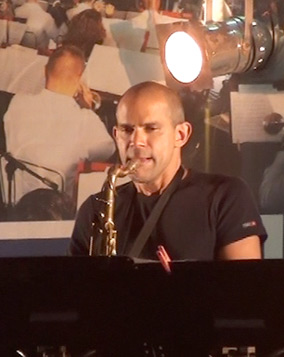

www.cusica.com (en
español, edición
de lujo
en cartón, también para
descargar, en Bs.) Mercadolibre (en
español, edición de
lujo
en cartón, en Bs.) Amazon
(en
inglés, cajita joyera de
plástico, en US $)
Emilio Mendoza
Guitar
eléctrica,
dirección
y producción
Ike
Lizardo
Bajo eléctrico
Marcy
Durán
Voz
Pablo
Gil
Saxo Soprano
Lerryns
Hernández
Batería
Invitado Especial:
Wladimir
Pérez
Bajo
Eléctrico
(solo)

Pablo Gil, Saxos
Esta pieza
es símbolo del tiempo eterno, vehículo de la vida,
indestructible y de su eterna permanencia. En la idea original, la
pieza tenía una fuerte presencia rítmica de danza zuliana,
un 6/8 lento y marcado, pero resultó al final ser más bien
como una balada lenta a tempo
de 77 ppm en 12/8. Se incluyó la dualidad ternaria-binaria
dentro del 12/8 en términos de hemiola como en otras piezas
del disco, pero se realizó un cambio radical a la división
binaria del pulso, en la improvisación del bajo de la
segunda vuelta, ejecutado por Wladimir Pérez, De esta
manera, cuando el saxofón entra en su improvisación, surge
un cambio contrastante de nuevo a pulso de división ternaria
y la pieza se incrementa emocionalmente. El saxofón retoma
el tema en 12/8 y sigue improvisando al mismo tiempo que
canta el tema, hasta llegar al “Bolero” final como una coda.El cambio hacia la
división de pulso a binario se incorporó una vez más al
final en este corto bolero, que, además de ser un poco más
lento y reflexivo (70 ppm), incluyó un estilo cromático
descendiente en la armonía, para finalizar la pieza en
ternario con la Coda, constituida de la frase de la
introducción y del interludio con la voz.
El estilo melódico de la pieza fue inspirado como homenaje
al compositor Antonio Carlos Jobim de Brasil, el grande de
la bosanova: una melodía muy plana y repetitiva con
cambios armónicos, que hace un contraste con la otra parte
melódica de saltos de tres notas descendientes que se
aprovecha para desarrollar el clímax de la pieza.
{kind=link}